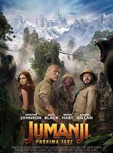

Jumanji: The Next Level é um filme de comédia de aventura e fantasia americano de 2019dirigido por Jake Kasdan e co-escrito por Jeff Pinkner e Scott Rosenberg . É uma sequência de Jumanji: Bem-vindo à Selva de 2017 , a segunda sequência de Jumanji de 1995 , e é a quarta parcela da franquia Jumanji . É estrelado por Dwayne Johnson , Jack Black , Kevin Hart , Karen Gillan , Nick Jonas , Alex Wolff , Morgan Turner , Ser'Darius Blain e Madison Iseman reprisando seus papéis do filme anterior, enquanto Awkwafina , Rory McCann , Danny Glover e Danny DeVito também se juntam ao elenco. A trama do filme se passa dois anos após Welcome to the Jungle , em que o mesmo grupo de adolescentes, junto com um velho amigo e duas adições involuntárias, ficam presos em Jumanji mais uma vez. Lá, todos eles enfrentam novos problemas e desafios com avatares antigos e novos, enquanto precisam salvar a terra de um novo vilão para escapar
Jumanji: The Next Level foi lançado nos cinemas nos Estados Unidos em 13 de dezembro de 2019, pela Sony Pictures Releasing , sob seu selo Columbia Pictures . O filme recebeu críticas geralmente positivas dos críticos e arrecadou US $ 800 milhões em todo o mundo contra um orçamento de US $ 125 a 132 milhões, tornando-se o décimo filme de maior bilheteria de 2019 . Uma sequência está em desenvolvimento.
